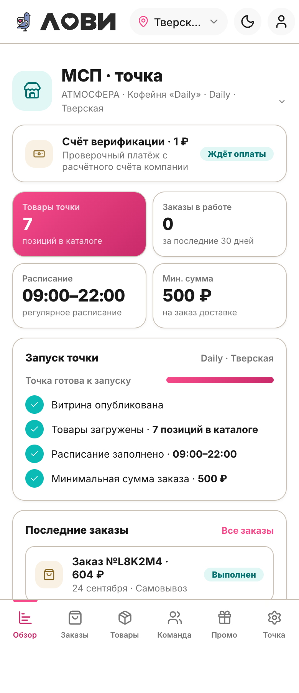
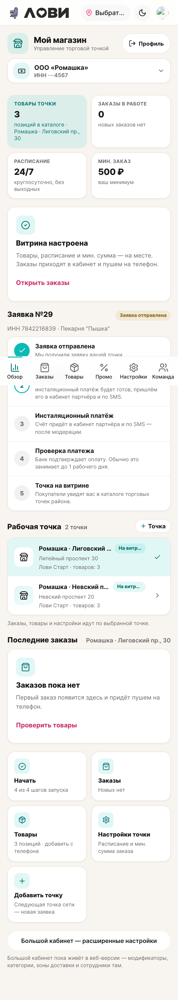

LOVII · кабинет МСП · 390px · светлая тема
Кабинет МСП: демо против стенда
Самый критичный экран. Слева — дизайн-демо, справа — как это собрано в приложении сейчас.

Демо (витрина, :8090/#/cab/msp) — цельный обзор одной точки.

Стенд (app, :5173/cabinet/msp) — функционально полнее, но рыхлее.
Что где
| Демо | Стенд (app) |
|---|
| Фокус | одна точка, обзор | мультиточка + онбординг + быстрые действия |
| Иерархия | крупный заголовок «МСП · точка», ясные секции | много мелких серых капс-подписей, слабые якоря |
| Карточки | крупные, единый радиус и паддинг | много мелких вложенных карточек и плиток, система дробится |
| Плотность | свободно, ровный ритм | тесно, обрезанные подписи («На витри…», «Выбрать…») |
| Состояния | всё по полочкам: чек-лист, KPI, заказы | много статусов сразу, конкурируют между собой |
| Нижняя навигация | Обзор · Заказы · Товары · Команда · Промо · Точка | набор/порядок другой, активный раздел слабо читается |
Вывод
Демо выигрывает по цельности: единый ритм карточек, ясная типографика, спокойные акценты, читаемость. Приложение выигрывает по функциональности (мультиточка, заявка, быстрые действия), но проигрывает по полировке: дробление карточек, теснота, обрезка текста, конкурирующие CTA и статусы.
Что с этим делать
- Заголовок и иерархия: дать экрану крупный заголовок раздела и убрать лишние капс-подписи — оставить один уровень.
- Карточки: свести мелкие вложенные плитки к единому набору крупных карточек; один радиус, один паддинг.
- Плотность и обрезка: вернуть воздух; запретить обрыв подписей (перенос/эллипсис там, где уместно).
- CTA: один главный акцент на экране, остальное — вторично.
- Нижняя навигация: единый набор и порядок разделов, явный активный.
- Порядок: сначала правим в демо (канон), затем переносим на стенд и отдаём в постановку zcode.